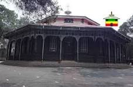

Kechene Debre Selam Medhanealem and Debre Tiguhan Kidus Gabriel Church was founded on Hamle 26, 1903 E.C. (August 2, 1911) by Crown Prince Lij Iyasu (Kifle Yaqob), with its construction reaching completion during the reign of Empress Zewditu. Located in northern Addis Ababa, this parish (Debr) stands as one of the city's ancient and historic churches, having served as a major spiritual center for over 115 years.
The church's foundation was laid and its Tabot (Ark of the Covenant replica) was consecrated in 1903 E.C. through Abeto Iyasu, who was Crown Prince under Emperor Menelik II. Because of this, the parish is honored in historical records and sacred poetry (Qene) as "The Debr of Iyasu." The construction and organization work begun by Lij Iyasu was later finalized under Empress Zewditu, a milestone preserved in a traditional Ge'ez Qene poem stating: "Iyasu first laid the foundation of this house, and Empress Zewditu brought it to completion." Established near the Kechene River, the church took its name from the surrounding area and has served as the anchor of social and spiritual life for the Kechene community ever since.
Within a single church compound, the Tabots of both Debre Selam Medhanealem (Savior of the World) and Debre Tiguhan Kidus Gabriel (Saint Gabriel) reside together. Because of these twin Tabots, monthly feast days on the 19th and 27th—along with major annual celebrations on Megabit 27, Tikimt 27, Tahsas 19, and Hamle 19—are observed with great splendor. The compound also features four ancient holy water springs (Tebel) that have offered spiritual and physical healing to the faithful for generations. In addition, the parish maintains a museum housing royal gifts collected over the centuries, ancient parchment manuscripts (Brana), sacred liturgical vessels, and vestments, alongside a library of both modern and spiritual works.
For many decades, Kechene Debre Selam has also served as a renowned cradle for scholars of traditional church education (Abinet), including sacred reading (Nibab), liturgical chant (Zema), sacred poetry (Qene), and liturgy (Qidase). Great teachers who dedicated their lives to the parish—such as Qegne Geta Tekle Yared Assefa, who served for 48 years—made lasting contributions by teaching children to read and raising generations of disciples. Operating under the parish, Finote Hiwot Sunday School is likewise one of the oldest and most established Sunday schools in Addis Ababa, playing a historic role in preserving liturgical hymns (Wereb and Ziq), producing hymn collections, and nurturing youth in their spiritual lives.
| Leader's Name | Term of Office |
|---|---|
| abune yohannes | 1903-1916 |
| aleka menassi | 1970-1980 |
| aleka zelalem | 1980-1990 |
| aleka alemayhu | 1990-2000 |
| aleka senay | 2000-2005 |
| aleka komos aba fikre mariyam | 2005-2008 |
| melake selam siyoum w/gebril | 2008-2010 |
| melake selam amde work dese | 2010-..... |